Research on Continual Learning to avoid catastrophic forgetting
Data set: CIFAR-100, 100 categories are equally divided into 5 tasks, of which
Base Task: class 0 ~ class 19, Task 1: class 20 ~ class 39, Task 2: class 40 ~ class 59, Task 3: class 60 ~ class 79, Task 4: class 80 ~ class 99
Assume that represents the data of the old task, represents the number of categories of the old task; represents the data of the new task, represents The number of categories of the new task; when the model is trained based on the training data of the new task, the number of output nodes of the model is, the loss function The calculation method of CrossEntropy has the following two forms
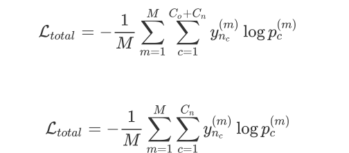Among them, represents the total number of samples in the current training set, represents the output of the model, If formula is used to calculate,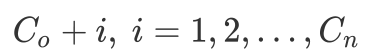, for a single sample, without loss of generality, assume that the sample belongs to the category , Then loss is:
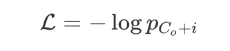 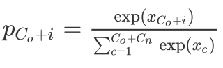 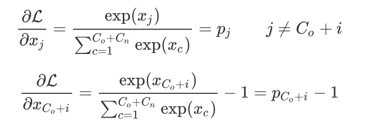 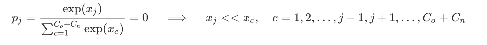 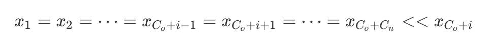 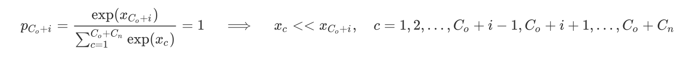Let be the feature extracted by the network, that is, the input of the classifier, then. So in summary, when training the current task, The weight corresponding to the old task in the classifier Will tend to be consistent, namely:
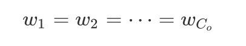Based on this result, when the old data is used to adjust the model with knowledge distillation, it may produce:
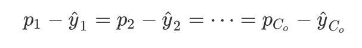As a result, konwledge distillation will not work. (By re-randomizing the corresponding weights in the classifier Whether the machine initialization can make the knowledge distillation work is yet to be verified by experiments)
In the experiment, formula (2) is used to calculate the classification loss in the process of training the new task, and the output of the old task is correspondingly The knowledge distillation constraint, that is, the LwF method, uses T-SNE to visualize how the model is The features (512 dimensions) extracted from the training set data of Base Task, the results are as follows:
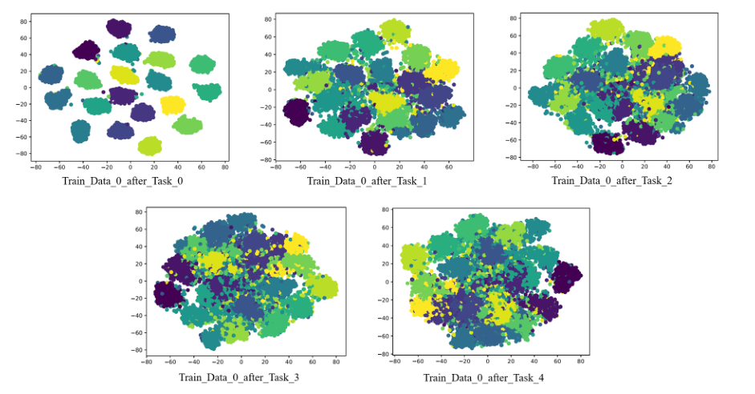It can be found that although the LwF method reduces the model’s forgetting of previous tasks to a certain extent, as the number of tasks increases, the model’s forgetting Forgetting also intensified further. (The characteristics of the training data of Base Task gradually become disordered with the increase of tasks) When training using the LwF method, formula (2) is used to calculate CrossEntropy and knowledge distillation is used. Row constraints, the model is in the test set (the test set of each task will include the test data of all tasks before its own test data) and The accuracy on the test set of Base Task is:
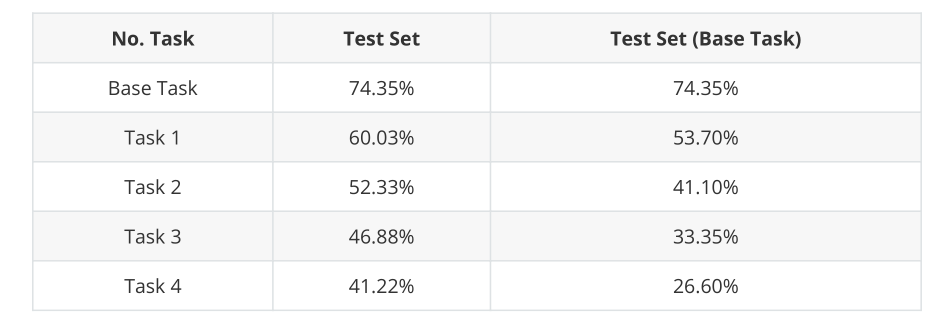If the constraints of knowledge distillation are discarded and only CrossEntropy (formula 2) is used, the model is testing Set (the test set of each task will include the test data of all tasks before its own test data) and the test set of Base Task The accuracy of the above is:
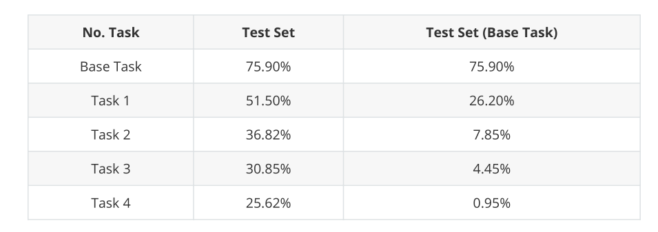Among them, the training epoch is 250; the initial learning rate (lr) is 0.1; when the epoch is 100, 150, 200, lr It becomes one tenth of the previous value; the temperature of knowledge distillation is 2; the Batch Size is 256.